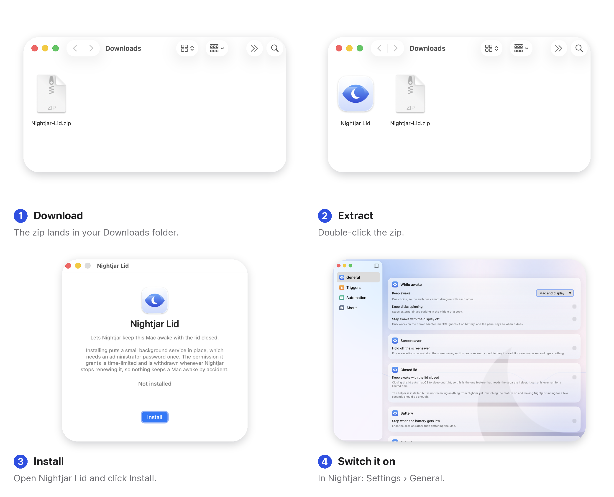

Nightjar
Nightjar Lid, the closed-lid helper
Keeping it awake with the lid closed
Closing the lid is an explicit instruction to sleep, and no app from the App Store can override it. This small free helper can. It is a separate download because Apple does not allow an App Store app to install a privileged helper — not because it costs anything.
It is built to fail safe: the permission is time-limited, renewed every few seconds, and withdrawn if Nightjar stops, the battery drops, the charger comes out, or eight hours pass. Nothing keeps a Mac awake by accident.
Download Nightjar Lid
macOS 14 or later · Apple silicon and Intel · free · all versions
How to install it

- Unzip the download and open Nightjar Lid.
- Click Install and enter your password. It is asked for once, by macOS, to put a small background service in place.
- In Nightjar, open Settings › General and switch on Keep awake with the lid closed.
To remove it later, open Nightjar Lid from your Applications folder and click Remove. It clears the override before it uninstalls, so a Mac is never left unable to sleep.